Sobre
Criativo, inovador e apaixonado por design e tecnologia, tenho mais de 5 anos de experiência como Diretor de Arte e Motion Designer, com projetos reconhecidos em grandes veículos como Vogue, Globo e Record News.
Recentemente, expandi minha atuação para o desenvolvimento web, atuando como Dev Júnior e suporte em TI por um ano.
Minha missão é unir criatividade e tecnologia para criar experiências visuais impactantes e soluções digitais eficientes.
Diretor de Arte & Desenvolvedor Júnior.
- Website: www.rafaelartdev.com
- Cidade: Carapicuíba
- Estado: São Paulo
- Idade: 27
- Formação: Multimídia & Cursando Análise e Desenvolvimento de Sistemas
- E-mail: rafael_mibr@hotmail.com
Sou prático, dinâmico e responsável, com ótimo relacionamento interpessoal.
Currículo
Abaixo, um pouco das minhas experiências profissionais e projetos.
Formação
Análise e Desenvolvimento de Sistemas
Cursando - Conclusão 2026
Faculdades Descomplica
Multimídia
2018 - 2020
ETEC - CENTRO PAULA SOUZA
Experiência Profissional
Suporte em Desenvolvimento / Dev Júnior
2023 - 2025
HCXTECH
- Auxílio na implementação e manutenção de sistemas web;
- Desenvolvimento de scripts de automação para otimização de processos internos;
- Integração de APIs e manipulação de respostas JSON;
- Suporte técnico para clientes e equipe interna;
- Desenvolvimento de Novos Sistemas;
Diretor de Arte
2022 - 2025
WD9 COMUNICAÇÃO
- Desenvolvimento de campanhas visuais para grandes marcas e veículos de mídia;
- Direção de arte para projetos que se tornaram capa de Vogue, Globo e Record News;
- Motion Design para projetos como a série Pelé Eterno (Globoplay) e campanhas de marketing;
- Criação de identidade visual para eventos e conferências empresariais;
Quer saber mais informações?
Clique aqui e baixe meu currículo.{kind=link}
{kind=link}
{kind=link}
{kind=link}
Habilidades
Sou um profissional criativo e inovador, com sólida experiência em design, motion graphics e desenvolvimento web. Como Diretor de Arte e Motion Designer há mais de 5 anos, já trabalhei em projetos de alto impacto, com destaque em veículos como Vogue, Globo e Record News.
No design, domino ferramentas como Photoshop, Illustrator, Premiere e After Effects, criando identidades visuais marcantes, animações dinâmicas e conteúdos visuais envolventes. Minha abordagem une estética refinada e narrativa visual estratégica para fortalecer marcas e conectar públicos.
Além do design, tenho experiência no desenvolvimento web, trabalhando com linguagens como JavaScript, TypeScript, PHP e frameworks como Node.js e Express.js. Minha atuação inclui a criação de APIs, automações e integração de sistemas, garantindo soluções eficientes e escaláveis.
Também possuo conhecimento em banco de dados, utilizando MySQL e MongoDB para gerenciar informações de forma estruturada e otimizada. Minha experiência com JSON e Axios me permite trabalhar com requisições dinâmicas e integração de dados em tempo real.
Com essa combinação de design, motion e tecnologia, meu objetivo é transformar ideias em experiências visuais impactantes e soluções digitais funcionais, sempre alinhando inovação e criatividade.
Além disso, tenho experiência na criação de aplicações móveis híbridas, utilizando frameworks como Ionic e React Native, o que me permite entregar soluções multiplataforma de alta performance, com interfaces intuitivas e uma excelente experiência de usuário.
Contato
Gostou do meu perfil e do meu histórico profissional?
Se você está em busca de um profissional qualificado, apaixonado por tecnologia e com uma abordagem dedicada e criativa, será um prazer conversar sobre como posso agregar valor ao seu projeto ou equipe.
Com experiência em diversas linguagens de programação e frameworks, estou sempre em busca de novos desafios que me permitam crescer e criar soluções inovadoras e eficientes.
Se meu trabalho despertou seu interesse ou se você quer saber mais sobre como posso contribuir para o sucesso da sua equipe ou projeto, entre em contato comigo. Estou à disposição para novas oportunidades!
 Fale comigo no WhatsApp
Fale comigo no WhatsApp
E-mail: rafael_mibr@hotmail.com
LinkedIn: @rafaelmibr